Projetos de Tecnologia da Informação | 2026–2027
Santa Casa de Misericórdia de Pelotas
A transformação digital torna nossos processos mais organizados, a comunicação mais eficiente e as decisões mais seguras. Cada sistema apresentado nasceu de uma necessidade real da nossa rotina — e todos têm o mesmo propósito: apoiar quem cuida.
| →PgDnEspaço | Próxima tela do projeto |
| ←PgUp | Tela anterior do projeto |
| MEsc | Voltar ao menu de projetos |
| 1 … 0 | Abrir projeto pelo número (no menu) |
| H | Voltar à abertura |
| E | Ir para o encerramento |
| F | Entrar ou sair da tela cheia |